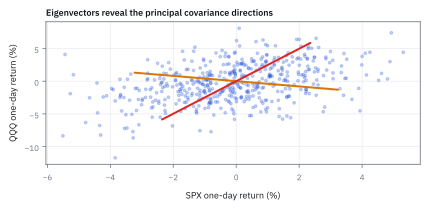

7.6 Eigenvalues and Positive Definiteness
eigenvector คือทิศที่ matrix ไม่หมุน แค่ยืดด้วยตัวคูณ eigenvalue และ covariance matrix ใช้ได้จริงก็ต่อเมื่อตัวยืดทุกตัวไม่ติดลบ ซึ่งคือ positive semidefinite
หุ้นธนาคารสามตัว JPM, BAC และ WFC (ตัวเลขสมมติ) มีความผันผวนตัวละ 25% ต่อปี และ correlation ทุกคู่ 0.7 พอร์ตลงเงินเท่ากันตัวละหนึ่งในสาม สูตรกระจายความเสี่ยงที่จำกันมาบอกว่าความผันผวนจะลดเหลือ $25\%/\sqrt3\approx14.43\%$ ใช่ไหม
ลองตอบก่อนเปิดเฉลย
ไม่ใช่ สูตรหารด้วย $\sqrt3$ ใช้เมื่อ correlation เป็นศูนย์ ที่ correlation 0.7 variance พอร์ตคือ $0.25^2(1+2\times0.7)/3=0.05$ ความผันผวน $\sqrt{0.05}\approx22.36\%$ ลดลงจาก 25% นิดเดียว เหตุผลเชิงภาพคือ covariance ของสามหุ้นนี้มีทิศ “ขึ้นลงพร้อมกัน” หนึ่งทิศที่ใหญ่มาก (eigenvalue 0.15) และพอร์ตเงินเท่ากันวางตัวอยู่บนทิศนั้นพอดี การกระจายเงินจึงไม่ได้หนีความเสี่ยงร่วมเลย
ภาพรวมก่อนลงสูตร
matrix $2\times2$ ส่งทุกจุดบนวงกลมหนึ่งหน่วยไปที่ไหนสักแห่ง ส่วนใหญ่ลูกศรถูกทั้งยืดและหมุน แต่มีบางทิศที่ลูกศรไม่หมุนเลย แค่ยาวขึ้นหรือสั้นลง ทิศพิเศษนี้เรียกว่า eigenvector และตัวคูณความยาวเรียกว่า eigenvalue สำหรับ matrix สมมาตร (เช่น covariance) ทิศพิเศษเหล่านี้ตั้งฉากกันเสมอ และเป็นแกนของวงรีที่วงกลมถูกยืดไปเป็น ดังรูปด้านล่าง
ในงานความเสี่ยง ภาพนี้มีความหมายตรงตัว: eigenvector ของ covariance คือพอร์ตที่ “ไม่ปนกัน” และ eigenvalue คือ variance ของพอร์ตนั้น ทิศที่ eigenvalue ใหญ่คือความเสี่ยงร่วมที่กระจายไม่ออก ทิศที่ eigenvalue เล็กมากคือที่ที่ optimizer ชอบไปทุ่มน้ำหนัก และถ้ามี eigenvalue ติดลบ ตารางนั้นไม่ใช่ covariance ของอะไรเลย เพราะจะมีพอร์ตที่ variance ติดลบ
หน้านี้หา eigenvalue จากสมการ แสดงว่า covariance แยกเป็น หมุน–ยืด–หมุนกลับ ได้เสมอ ใช้มันเขียน variance พอร์ตใหม่ นิยาม positive definite กับ semidefinite ด้วยภาพเส้นระดับ ตรวจด้วย Sylvester's criterion แล้วตอบ hook ด้วยโครงสร้างของหุ้นสามตัว และปิดด้วย covariance จริงของ asset class แปดกลุ่ม
รูป — matrix ยืดวงกลมเป็นวงรี มีแค่สองทิศที่ไม่หมุน
ศัพท์ที่ใช้ในหัวข้อนี้
- Eigenvector และ eigenvalue
- vector $\mathbf u\ne\mathbf 0$ กับตัวเลข $\lambda$ ที่ $A\mathbf u=\lambda\mathbf u$ คือทิศที่ matrix แค่ยืดด้วยตัวคูณ $\lambda$ ใช้หาทิศหลักของความเสี่ยง
- Spectral decomposition
- การเขียน matrix สมมาตรเป็น $Q\Lambda Q^{\mathsf T}$ คือหมุน ยืดตามแกน แล้วหมุนกลับ ใช้คำนวณ inverse กำลัง และรากที่สองของ covariance
- Positive semidefinite (PSD)
- matrix สมมาตรที่ $\mathbf x^{\mathsf T}A\mathbf x\ge0$ ทุก $\mathbf x$ คือ eigenvalues ไม่ติดลบ เป็นเงื่อนไขที่ covariance ทุกตัวต้องผ่าน
- Positive definite (PD)
- $\mathbf x^{\mathsf T}A\mathbf x\gt0$ ทุก $\mathbf x\ne\mathbf 0$ คือ eigenvalues เป็นบวกทั้งหมด covariance แบบนี้ไม่มีพอร์ตที่ความเสี่ยงเป็นศูนย์และกลับด้านได้
- Indefinite
- มีทั้งทิศที่ quadratic form เป็นบวกและเป็นลบ ใช้บอกว่าจุดที่อนุพันธ์เป็นศูนย์เป็นจุดอานม้า ไม่ใช่จุดต่ำสุด
- Principal component (PCA)
- eigenvector ของ covariance เรียงตาม eigenvalue จากมากไปน้อย ใช้สรุปว่าการเคลื่อนไหวของสินทรัพย์จำนวนมากมาจากไม่กี่ทิศ
ขั้นที่ 1 — eigenvector: ทิศที่คูณแล้วยังอยู่บนเส้นเดิม
ทดลองกับ $M$ ในรูปภาพรวม ส่งสามทิศเข้าไปแล้วดูว่าออกมาบนเส้นเดิมไหม
สองบรรทัดแรกได้ผลเป็นตัวคูณของ input เดิม จึงเป็น eigenvectors ที่มี eigenvalues 4 และ 2 บรรทัดสามได้ $(3,1)$ ซึ่งไม่มีตัวเลขตัวไหนคูณ $(1,0)$ แล้วได้ เพราะพิกัดที่สองจาก 0 กลายเป็น 1 ลูกศรจึงถูกหมุน
ถ้า $\mathbf u$ เป็น eigenvector แล้ว $c\mathbf u$ ก็เป็นด้วยทุก $c\ne0$ (เปลี่ยนแค่ความยาวและอาจกลับหัว) จึงนิยมทำให้ยาวหนึ่งหน่วย $\|\mathbf u\|=1$ เพื่อเทียบกันได้ แต่เครื่องหมายยังเลือกได้สองทาง โปรแกรมสองตัวอาจรายงาน $\mathbf u$ กับ $-\mathbf u$ ซึ่งเป็นทิศเดียวกัน eigenvalue ศูนย์แปลว่าทิศนั้นถูกส่งไปศูนย์ คือทิศใน null space
ขั้นที่ 2 — หา eigenvalue: เมื่อไร $A-\lambda I$ บี้ทิศหนึ่งทิ้ง
ย้ายข้าง $A\mathbf u=\lambda\mathbf u$ เป็น $(A-\lambda I)\mathbf u=\mathbf 0$ ถ้า $A-\lambda I$ กลับด้านได้ คำตอบมีแค่ $\mathbf u=\mathbf 0$ ซึ่งไม่นับ eigenvalue จึงต้องทำให้ $A-\lambda I$ singular คือ determinant เป็นศูนย์ ลองกับ covariance รายวันของดัชนีสองตัว (สมมติ) ความผันผวน 2% และ 3% correlation 0.4 เขียนในหน่วยเปอร์เซ็นต์ยกกำลังสอง
สมการกำลังสองนี้คือ characteristic equation สัมประสิทธิ์ของ $\lambda$ คือ trace $4+9=13$ และพจน์คงที่คือ determinant $36-5.76=30.24$ eigenvalues จึงรวมกันได้ 13 และคูณกันได้ 30.24 ใช้ตรวจคำตอบได้ทันที ทั้งสองเป็น variance หน่วย %² ไม่ใช่ความผันผวน ในหน่วยเศษส่วนคือ 0.00099655 และ 0.00030345
หาทิศของ $\lambda_1$ จากแถวแรก $(4-\lambda_1)x+2.4y=0$ ได้ $y/x=5.9655/2.4\approx2.4856$ หารด้วยความยาวได้ $\mathbf u_1\approx(0.3732,\ 0.9277)$ ส่วน $\mathbf u_2\approx(-0.9277,\ 0.3732)$ ตั้งฉากกับ $\mathbf u_1$ เลข 2.4856 คือความชันของแกนหลักของกลุ่มข้อมูล ไม่ใช่ regression slope ของดัชนีที่สองบนดัชนีแรก (ซึ่งคือ $2.4/4=0.6$)
รูป — แกนหลักของกลุ่มข้อมูลจำลองคือ eigenvectors

ขั้นที่ 3 — matrix สมมาตร = หมุน แล้วยืด แล้วหมุนกลับ
ทำไมสอง eigenvectors ของ $\Sigma$ ตั้งฉากกันพอดี ใช้ความสมมาตรย้าย $\Sigma$ ข้ามไปอีกฝั่งของ inner product สำหรับ eigenpair สองคู่ที่ eigenvalues ต่างกัน
บรรทัดที่สองใช้ $\Sigma^{\mathsf T}=\Sigma$ จาก Transpose ตัวเลขเดียวกันคำนวณได้สองทาง จึงต้องเท่ากัน และเมื่อ $\lambda_i\ne\lambda_j$ ทางเดียวที่เป็นไปได้คือ inner product เป็นศูนย์ ทฤษฎีที่ใหญ่กว่า (spectral theorem) รับประกันว่า matrix สมมาตรจริงทุกตัวมี eigenvalues เป็นจำนวนจริง และมี eigenvectors ตั้งฉากกันครบทุกมิติ
เรียง eigenvectors เป็นคอลัมน์ของ $Q$ และ eigenvalues บนแนวทแยงของ $\Lambda$ จะได้การแยกตัวที่ใช้ทั้งเล่ม
อ่านจากขวาไปซ้าย: $Q^{\mathsf T}$ หมุนให้ eigenvectors มาอยู่บนแกน $\Lambda$ ยืดแต่ละแกนด้วย eigenvalue ของมัน แล้ว $Q$ หมุนกลับ ดังรูปด้านล่าง ที่นี่ $Q^{-1}=Q^{\mathsf T}$ เพราะคอลัมน์ตั้งฉากและยาวหนึ่ง (การหมุนไม่ยืดอะไร จึงย้อนได้ด้วยการพลิก) ซึ่งเป็นกรณีพิเศษที่ transpose เท่ากับ inverse inverse ของ $\Sigma$ ได้มาฟรี ๆ: ยืดด้วย $1/\lambda_i$ แทน ทิศที่ eigenvalue เล็กจึงถูกขยายมากที่สุด
รูป — สามขั้นของ $Q\Lambda^{1/2}Q^{\mathsf T}$: หมุน ยืด หมุนกลับ
ขั้นที่ 4 — variance ของพอร์ตในพิกัดของ eigenvectors
พอร์ตน้ำหนัก $\mathbf w$ เขียนในพิกัดใหม่เป็น $\mathbf c=Q^{\mathsf T}\mathbf w$ (คือ $c_i=\mathbf u_i^{\mathsf T}\mathbf w$) แล้วแทนลงในสูตรความเสี่ยง
ในพิกัดใหม่ไม่มีพจน์ไขว้ เพราะ $\Lambda$ เป็นแนวทแยง variance พอร์ตจึงเป็นผลรวมของ “eigenvalue คูณกำลังสองของน้ำหนักในทิศนั้น” แต่ละพจน์ไม่ติดลบเมื่อ eigenvalues ไม่ติดลบ ถ้า $\|\mathbf w\|=1$ (ความยาวแบบ L2 ไม่ใช่ผลรวมน้ำหนัก) ค่า $c_i^2$ รวมกันได้ 1 variance จึงเป็นค่าเฉลี่ยถ่วงน้ำหนักของ eigenvalues อยู่ระหว่างค่าน้อยสุดกับมากสุดเสมอ รูปด้านล่างหมุน $\mathbf w$ รอบวงกลมให้เห็น
ตัวอย่าง $\mathbf w=(0.6,0.4)$: $c_1=0.6(0.3732)+0.4(0.9277)\approx0.5950$ และ $c_2=-0.6(0.9277)+0.4(0.3732)\approx-0.4073$ ได้ $\lambda_1c_1^2\approx3.5285$ กับ $\lambda_2c_2^2\approx0.5035$ รวม 4.032 %² ตรงกับสูตรตรง $0.36(4)+2(0.24)(2.4)+0.16(9)=4.032$ ความผันผวน 2.008% ต่อวัน ทิศแรกแบก 87.51% ของ variance พอร์ตนี้ ต่างจาก 76.66% ($\lambda_1/\operatorname{tr}\Sigma=9.9655/13$) ซึ่งคือสัดส่วนของ variance รวมทุกตัวที่ทิศแรกอธิบาย ตามเกณฑ์ของ PCA สองตัวเลขตอบคนละคำถาม
รูป — variance ของพอร์ตยาวหนึ่งหน่วย เมื่อหมุนทิศไปรอบ ๆ
ขั้นที่ 5 — PSD, PD และ indefinite ดูได้จากเส้นระดับ
covariance ต้องให้ variance ไม่ติดลบกับทุกพอร์ต: $\mathbf w^{\mathsf T}\Sigma\mathbf w=\operatorname{Var}(\mathbf w^{\mathsf T}\mathbf R)\ge0$ ทุก $\mathbf w$ เงื่อนไขนี้เรียกว่า positive semidefinite สูตรจากขั้นก่อนแปลเงื่อนไขนี้เป็นเรื่องของ eigenvalues ทันที
ถ้า eigenvalues ไม่ติดลบทั้งหมด ผลรวม $\sum\lambda_ic_i^2$ ไม่มีทางติดลบ ทิศกลับ: ถ้ามี $\lambda_k\lt0$ เลือก $\mathbf x$ เป็น eigenvector ตัวนั้นก็ได้ค่าติดลบทันที PD เข้มกว่า PSD ตรงที่ห้ามมีทิศที่ได้ศูนย์ PSD ที่ไม่ใช่ PD จึงเป็น singular เสมอ (มี eigenvalue ศูนย์) เหมือน sample covariance ของพอร์ตผีใน Rank, Range, and Invertibility
รูปด้านล่างใช้ตัวอย่างที่เป็น Hessian ของฟังก์ชัน $f(\mathbf x)=x_1^2+3x_1x_2+x_2^3$ ซึ่งมี gradient เป็นศูนย์สองจุด ที่ $\mathbf x=\mathbf 0$ Hessian คือ $\begin{bmatrix}2&3\\3&0\end{bmatrix}$ มี eigenvalues $1\pm\sqrt{10}\approx4.16$ และ $-2.16$ จึง indefinite จุดนั้นเป็นจุดอานม้า ไม่ใช่จุดต่ำสุด ที่ $\mathbf x=(-9/4,\ 3/2)$ Hessian คือ $\begin{bmatrix}2&3\\3&9\end{bmatrix}$ มี eigenvalues ราว 10.11 และ 0.89 จึง PD และเป็นจุดต่ำสุดเฉพาะที่ เรื่องนี้ใช้เต็ม ๆ ใน Hessian และเงื่อนไขอันดับสอง
ระวังข้อเดียว: เกณฑ์ eigenvalue ใช้กับ matrix สมมาตรเท่านั้น $\begin{bmatrix}1&4\\0&1\end{bmatrix}$ มี eigenvalues เป็น 1 ทั้งคู่ แต่ $\mathbf x=(1,-1)$ ให้ $\mathbf x^{\mathsf T}A\mathbf x=1-4+1=-2$
รูป — เส้นระดับของ quadratic form สามแบบ
ขั้นที่ 6 — Sylvester's criterion: ตรวจ PD โดยไม่ต้องหา eigenvalues
กับ matrix สมมาตร $2\times2$ ที่ $a\gt0$ จัดกำลังสองสมบูรณ์ได้ตรง ๆ
ทั้งสองพจน์เป็นกำลังสองคูณสัมประสิทธิ์ ผลรวมเป็นบวกทุก $\mathbf x\ne\mathbf 0$ ก็ต่อเมื่อ $a\gt0$ และ $ad-b^2\gt0$ ตัวเลขสองตัวนี้คือ determinant ของบล็อกบนซ้ายขนาด $1\times1$ และ $2\times2$ (leading principal minors) กรณีทั่วไปเรียกว่า Sylvester's criterion: PD ก็ต่อเมื่อ leading principal minors ทุกขนาดเป็นบวก
ตรวจ: covariance รายวัน $a=4\gt0$, $36-5.76=30.24\gt0$ จึง PD Hessian $\begin{bmatrix}2&3\\3&9\end{bmatrix}$ ได้ $2\gt0$ และ $18-9=9\gt0$ PD ส่วน $\begin{bmatrix}2&3\\3&0\end{bmatrix}$ ได้ $0-9=-9\lt0$ ไม่ PD กับดักที่พบบ่อย: เปลี่ยน “บวก” เป็น “ไม่ลบ” เพื่อตรวจ PSD ใช้ไม่ได้ $\begin{bmatrix}0&0\\0&-1\end{bmatrix}$ มี leading minors เป็น 0 กับ 0 แต่ $\mathbf x=(0,1)$ ให้ $-1$ การตรวจ PSD ต้องดู principal minors ทุกตัว (รวมช่องแนวทแยงทุกช่อง) หรือดู eigenvalues
ขั้นที่ 7 — สามธนาคาร: ทิศร่วมหนึ่งทิศ และระนาบ spread สองมิติ
กลับมาที่ hook ความผันผวนเท่ากัน $\sigma=0.25$ correlation ทุกคู่ $\rho$ เขียน covariance ด้วย $\mathbf 1=(1,1,1)$ ได้กะทัดรัด แล้วเดา eigenvectors จากโครงสร้าง
$\mathbf 1\mathbf 1^{\mathsf T}\mathbf 1=\mathbf 1(\mathbf 1^{\mathsf T}\mathbf 1)=3\,\mathbf 1$ ทิศ “ถือทุกตัวเท่ากัน” จึงเป็น eigenvector ส่วนทิศใดที่ผลรวมพิกัดเป็นศูนย์ (long บางตัว short บางตัว) พจน์ $\mathbf 1\mathbf 1^{\mathsf T}\mathbf v=\mathbf 1(\mathbf 1^{\mathsf T}\mathbf v)$ หายไป เหลือแค่ $(1-\rho)$ trace ตรวจได้: $0.15+2(0.01875)=0.1875=3(0.0625)$
ตอบ hook: พอร์ตเงินเท่ากัน $\mathbf w=\mathbf 1/3$ อยู่บนทิศร่วมทั้งหมด variance $=\lambda_{\text{common}}\|\mathbf w\|^2=0.15/3=0.05$ ความผันผวน 22.36% ส่วนพอร์ต spread เช่น long JPM short BAC ขนาดยาวหนึ่ง $(1,-1,0)/\sqrt2$ มีความผันผวน $\sqrt{0.01875}\approx13.69\%$ eigenvalue ของ spread ซ้ำสองครั้ง ระนาบของพอร์ตผลรวมศูนย์ทั้งระนาบเป็น eigenvectors ได้หมด จะเลือกคู่ไหนที่ตั้งฉากกันก็ได้ โปรแกรมสองตัวจึงอาจรายงานทิศต่างกันโดยที่ไม่มีอะไรผิด
สูตรเดียวกันบอกช่วงของ correlation ที่เป็นไปได้ eigenvalues ต้องไม่ติดลบ: $1+2\rho\ge0$ และ $1-\rho\ge0$ คือ $-\tfrac12\le\rho\le1$ สำหรับสามตัว ลอง $\rho=-0.6$: ทุกคู่ดูปกติ (อยู่ระหว่าง −1 กับ 1 และแต่ละบล็อก $2\times2$ มี determinant $1-0.36=0.64\gt0$) แต่ $\lambda_{\text{common}}=0.0625(1-1.2)=-0.0125$ พอร์ตเงินเท่ากันจะมี “variance” $-0.0125/3\approx-0.0042$ ซึ่งเป็นไปไม่ได้ ตารางนี้จึงไม่ใช่ covariance ของหุ้นสามตัวใด ๆ เลย
รูป — eigenvalues ของสามหุ้นเมื่อ correlation เปลี่ยน
ขั้นที่ 8 — covariance จริงของ asset class แปดกลุ่ม
โจทย์ให้อะไรมาบ้าง: covariance รายปีของแปดกลุ่ม (พันธบัตรสหรัฐ พันธบัตรต่างประเทศ หุ้นสหรัฐสี่กลุ่ม หุ้นตลาดพัฒนาแล้วนอกสหรัฐ และหุ้นตลาดเกิดใหม่) ที่ประมาณจากข้อมูลในอดีต ชุดเดียวกับใน Matrix Multiplication trace คือผลรวม variance ของแปดกลุ่ม 0.3406
คำตอบ: หา eigenvalues ด้วยโปรแกรม (โค้ดท้ายหน้าใช้วิธี Jacobi ซึ่งหมุนทีละคู่แกนจนนอกแนวทแยงเป็นศูนย์) ได้แปดค่า เป็นบวกทั้งหมด ตารางนี้จึง PD ค่าใหญ่สุด 0.2545 คิดเป็น 74.73% ของ trace eigenvector ของมันมีน้ำหนักบวกในหุ้นทั้งหกกลุ่ม (0.24 ถึง 0.59) และแทบเป็นศูนย์ในพันธบัตร คือทิศ “หุ้นทุกตลาดขึ้นลงพร้อมกัน” ค่าเล็กสุด 0.00063 (0.19%) มี eigenvector ที่เกือบทั้งหมดอยู่ในพันธบัตรสหรัฐ (0.96) อัตราส่วนค่าใหญ่สุดต่อเล็กสุด คือ condition number ราว 403
ความหมายเชิงปฏิบัติ: สูตรจัดพอร์ตที่ใช้ $\Sigma^{-1}$ ยืดทิศของ eigenvalue เล็กสุดมากกว่าทิศใหญ่สุด 403 เท่า error เล็ก ๆ ในการประมาณผลตอบแทนคาดหวังตามทิศเล็ก ๆ จึงกลายเป็นน้ำหนักที่ใหญ่โต นี่คือเหตุผลเชิง matrix ที่ mean–variance optimizer ถูกเรียกว่า “ตัวขยาย error” และค่า eigenvalue บนสุดที่ประมาณจากข้อมูลมักสูงกว่าค่าจริง ส่วนค่าล่างสุดมักต่ำกว่าค่าจริง การ shrink จึงดึง eigenvalues เข้าหากัน ตัด eigenvalues เล็กทิ้งทั้งหมดก็ไม่ใช่ทางออก เพราะจะได้ covariance ที่ singular
รูป — eigenvalues ของ covariance แปด asset class
ขั้นที่ 9 — PD กับ optimizer: ชามที่มีก้นเดียว
optimizer ด้านความเสี่ยงมักหาค่าต่ำสุดของ $f(\mathbf w)=\tfrac12\mathbf w^{\mathsf T}\Sigma\mathbf w-\boldsymbol\mu^{\mathsf T}\mathbf w$ ขยับ $\mathbf w$ ตามทิศ $\mathbf z$ ด้วยขนาด $t$ แล้วกระจาย
พจน์ $t^2$ คือความโค้งตามทิศ $\mathbf z$ และ $\Sigma$ ก็คือ Hessian ของ $f$ ถ้า $\Sigma$ เป็น PD ทุกทิศโค้งขึ้น $f$ เป็นชามที่มีก้นเดียว คือจุดที่ $\Sigma\mathbf w=\boldsymbol\mu$ ซึ่งมีคำตอบเดียวเพราะ $\Sigma$ กลับด้านได้ ถ้า $\Sigma$ เป็นแค่ PSD จะมีทิศรางที่ $\mathbf z^{\mathsf T}\Sigma\mathbf z=0$ ถ้า $\boldsymbol\mu$ ให้ผลตอบแทนตามทิศนั้น $f$ ลดได้ไม่สิ้นสุด และถ้า $\Sigma$ indefinite ก็ไม่มีก้นชามเลย optimizer ที่ “converge” บน matrix แบบนั้นเพราะชน constraint ไม่ได้แปลว่าคำตอบมีความหมาย
รูปร่างของชามกำหนดความยากของการหาก้นด้วย ชามที่ eigenvalue มากสุดกับน้อยสุดต่างกันมาก (condition number ใหญ่) เป็นหุบแคบยาว วิธี gradient จะวิ่งซิกแซก ซึ่งเป็นเรื่องของ gradient descent และ Newton's method covariance รายวันของดัชนีสองตัวมี condition number $9.97/3.03\approx3.28$ ชามค่อนข้างกลม ของแปด asset class มี 403
ความผิดที่ให้คำตอบผิดแบบเงียบ ๆ
อ่าน eigenvalue เป็นความผันผวน: $\lambda_1=9.97$ คือ variance หน่วย %² ความผันผวนคือ $\sqrt{9.97}\approx3.16\%$ ไม่ใช่ 9.97%
ยาวหนึ่งหน่วยไม่ใช่ลงเงินครบ: $\mathbf u_1=(1,1,1)/\sqrt3$ ของสามธนาคารยาวหนึ่งแบบ L2 แต่ลงเงินรวม $\sqrt3\approx173\%$ ความผันผวน 38.73% ของมันเทียบตรง ๆ กับพอร์ตเงินเท่ากัน (22.36%) ไม่ได้
สับสนสัดส่วนสองแบบ: ทิศแรกอธิบาย 76.66% ของ trace แต่แบก 87.51% ของ variance พอร์ต $(0.6,0.4)$ รายงานผิดตัวเลขแล้วตัดสินใจ hedge ผิดขนาด
เชื่อ correlation ทีละคู่: สามหุ้นที่ correlation $-0.6$ ทุกคู่ผ่านการตรวจทีละคู่ แต่มี eigenvalue $-0.0125$ ใช้ใน optimizer จะได้พอร์ตที่ “ความเสี่ยงติดลบ”
ใช้เกณฑ์ eigenvalue กับ matrix ไม่สมมาตร: $\begin{bmatrix}1&4\\0&1\end{bmatrix}$ มี eigenvalues 1 กับ 1 แต่ quadratic form ที่ $(1,-1)$ เป็น $-2$
ตัดทิศเล็กทิ้งหมด: เก็บแค่ eigenvalues ใหญ่ ๆ แล้วตั้งที่เหลือเป็นศูนย์ ได้ covariance ที่ singular ทันที และ optimizer จะหาพอร์ตความเสี่ยงศูนย์ปลอม ๆ ในทิศที่ตัดทิ้ง
โจทย์ตรวจความเข้าใจ
1. ขยายพอร์ต $(0.6,0.4)$ บนดัชนีสองตัวเป็น $(1.2,0.8)$ ส่วนแบ่ง variance ตามสองทิศเปลี่ยนไหม variance และความผันผวนเป็นเท่าไร
เฉลย
พิกัด $\mathbf c$ คูณ 2 ทุกพจน์ $\lambda_ic_i^2$ คูณ 4 สัดส่วน 87.51% กับ 12.49% จึงเท่าเดิม variance เป็น $4(4.032)=16.128$ %² ความผันผวน $\sqrt{16.128}\approx4.016\%$ ต่อวัน สองเท่าของเดิม
2. สินทรัพย์ $n$ ตัว ความผันผวนเท่ากัน correlation ทุกคู่ $\rho$ หา eigenvalue ของทิศร่วม แล้วหา correlation ต่ำสุดที่เป็นไปได้เมื่อ $n=4$
เฉลย
$\mathbf 1\mathbf 1^{\mathsf T}\mathbf 1=n\mathbf 1$ จึงได้ $\Sigma\mathbf 1=\sigma^2\big((1-\rho)+n\rho\big)\mathbf 1=\sigma^2\big(1+(n-1)\rho\big)\mathbf 1$ ทิศ spread ยังเป็น $\sigma^2(1-\rho)$ ต้องการ $1+(n-1)\rho\ge0$ คือ $\rho\ge-1/(n-1)$ ที่ $n=4$ ได้ $\rho\ge-1/3$ ยิ่งสินทรัพย์มาก correlation ติดลบเท่ากันทุกคู่ยิ่งเป็นไปไม่ได้ เพราะทุกตัวไม่สามารถ “สวนทาง” กับตัวอื่นทุกตัวพร้อมกัน
3. ใช้ Sylvester's criterion ตรวจว่า $\begin{bmatrix}0.04&0.02\\0.02&0.05\end{bmatrix}$ (covariance ในสูตรจัดพอร์ตของหน้าก่อน) เป็น PD หรือไม่ แล้วหา eigenvalues
เฉลย
$a=0.04\gt0$ และ $0.04(0.05)-0.02^2=0.0016\gt0$ จึง PD eigenvalues คือรากของ $\lambda^2-0.09\lambda+0.0016=0$ ได้ $\lambda=(0.09\pm\sqrt{0.0081-0.0064})/2=(0.09\pm0.04123)/2$ คือราว 0.0656 และ 0.0244 ผลรวม 0.09 เท่ากับ trace ผลคูณ 0.0016 เท่ากับ determinant ทั้งคู่บวกตรงกับผลของ Sylvester
คำนวณซ้ำด้วย JavaScript
โค้ดหา eigenvalues ด้วยวิธี Jacobi (หมุนทีละคู่แกนเพื่อลบช่องนอกแนวทแยง ใช้ได้กับ matrix สมมาตร) ตรวจตัวอย่างสองมิติ สามธนาคาร และ covariance แปดกลุ่ม
เปิดดูโค้ด
function jacobi(A0) { // symmetric matrices only
const n = A0.length, A = A0.map(r => r.slice());
const V = A.map((r, i) => r.map((_, j) => (i === j ? 1 : 0)));
for (let sweep = 0; sweep < 100; sweep++) {
let off = 0;
for (let i = 0; i < n; i++) for (let j = i + 1; j < n; j++) off += A[i][j] ** 2;
if (off < 1e-30) break;
for (let p = 0; p < n; p++) for (let q = p + 1; q < n; q++) {
if (A[p][q] === 0) continue;
const th = (A[q][q] - A[p][p]) / (2 * A[p][q]);
const t = Math.sign(th || 1) / (Math.abs(th) + Math.sqrt(th * th + 1));
const c = 1 / Math.sqrt(t * t + 1), s = t * c;
for (let k = 0; k < n; k++) { const a = A[k][p], b = A[k][q]; A[k][p] = c * a - s * b; A[k][q] = s * a + c * b; }
for (let k = 0; k < n; k++) { const a = A[p][k], b = A[q][k]; A[p][k] = c * a - s * b; A[q][k] = s * a + c * b; }
for (let k = 0; k < n; k++) { const a = V[k][p], b = V[k][q]; V[k][p] = c * a - s * b; V[k][q] = s * a + c * b; }
}
}
const order = A.map((_, i) => i).sort((i, j) => A[j][j] - A[i][i]);
return { values: order.map(i => A[i][i]), vectors: order.map(i => V.map(r => r[i])) };
}
const quad = (A, x) => x.reduce((s, xi, i) => s + xi * A[i].reduce((t, a, j) => t + a * x[j], 0), 0);
const S2 = [[4, 2.4], [2.4, 9]]; // percent^2
const e2 = jacobi(S2);
console.log(e2.values, e2.vectors[0]); // 9.9655 3.0345, (0.3732, 0.9277) up to sign
const w = [0.6, 0.4], c = e2.vectors.map(u => u[0] * w[0] + u[1] * w[1]);
console.log(quad(S2, w), c.map((ci, i) => e2.values[i] * ci * ci)); // 4.032 = 3.5285 + 0.5035
const bank = rho => [0, 1, 2].map(i => [0, 1, 2].map(j => 0.0625 * (i === j ? 1 : rho)));
console.log(jacobi(bank(0.7)).values, quad(bank(0.7), [1/3, 1/3, 1/3])); // 0.15 0.01875 0.01875, 0.05
console.log(jacobi(bank(-0.6)).values); // one negative: -0.0125
const C = [[1.005e-3, 1.328e-3, -5.79e-4, -6.75e-4, 1.21e-4, 1.28e-4, -4.45e-4, -4.37e-4],
[1.328e-3, 7.277e-3, -1.307e-3, -6.1e-4, -2.237e-3, -9.89e-4, 1.442e-3, -1.535e-3],
[-5.79e-4, -1.307e-3, 5.9852e-2, 2.7588e-2, 6.3497e-2, 2.3036e-2, 3.2967e-2, 4.8039e-2],
[-6.75e-4, -6.1e-4, 2.7588e-2, 2.9609e-2, 2.6572e-2, 2.1465e-2, 2.0697e-2, 2.9854e-2],
[1.21e-4, -2.237e-3, 6.3497e-2, 2.6572e-2, 0.102488, 4.2744e-2, 3.9943e-2, 6.5994e-2],
[1.28e-4, -9.89e-4, 2.3036e-2, 2.1465e-2, 4.2744e-2, 3.2056e-2, 1.9881e-2, 3.2235e-2],
[-4.45e-4, 1.442e-3, 3.2967e-2, 2.0697e-2, 3.9943e-2, 1.9881e-2, 2.8355e-2, 3.5064e-2],
[-4.37e-4, -1.535e-3, 4.8039e-2, 2.9854e-2, 6.5994e-2, 3.2235e-2, 3.5064e-2, 7.9958e-2]];
const e8 = jacobi(C), tr = C.reduce((s, r, i) => s + r[i], 0);
console.log(e8.values.map(v => (100 * v / tr).toFixed(2)), e8.values[0] / e8.values[7]); // 74.73 ... 0.19, ~403สิ่งที่ควรตอบได้หลังอ่าน
- eigenvector คือทิศที่ matrix ไม่หมุน eigenvalue คือตัวยืด หาได้จาก $\det(A-\lambda I)=0$ และตรวจด้วยผลรวมเท่ากับ trace ผลคูณเท่ากับ determinant
- matrix สมมาตรแยกเป็น $Q\Lambda Q^{\mathsf T}$ (หมุน ยืด หมุนกลับ) eigenvectors ตั้งฉากกัน และ variance พอร์ตคือ $\sum\lambda_ic_i^2$
- covariance ต้อง PSD (eigenvalues ไม่ติดลบ) ถ้า PD ด้วยก็ไม่มีพอร์ตความเสี่ยงศูนย์และกลับด้านได้ ตรวจ $2\times2$ ด้วย Sylvester's criterion
- หุ้นสามตัว correlation 0.7 มีทิศร่วม eigenvalue 0.15 พอร์ตเงินเท่ากันจึงผันผวน 22.36% ไม่ใช่ 14.43% และ correlation ทุกคู่ต้องไม่ต่ำกว่า −0.5
- covariance จริงแปดกลุ่มมีทิศแรก 74.73% ของ trace และ condition number ราว 403 ซึ่งบอกว่า $\Sigma^{-1}$ ในสูตรจัดพอร์ตไวต่อ error มาก
บทนี้ใช้ matrix กับตัวเลขที่ให้มา บทถัดไปนำมาใช้กับตัวแปรสุ่มตรง ๆ เริ่มที่ mean vector และ covariance matrix ซึ่งอธิบายว่าทำไม covariance ที่สร้างจากตัวแปรสุ่มจริงจึงสมมาตรและ PSD เสมอ และ บทของ multivariate normal จะใช้ $\Sigma^{-1}$ กับ eigenvalues ทั้งบท